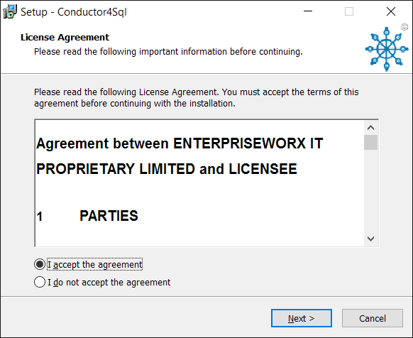
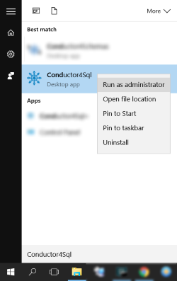
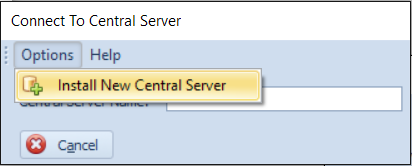
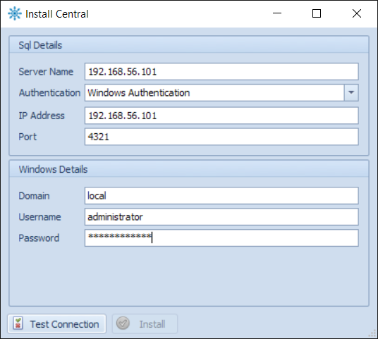
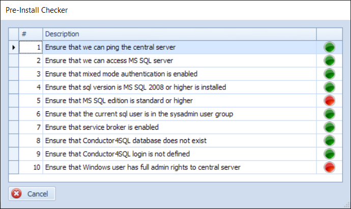
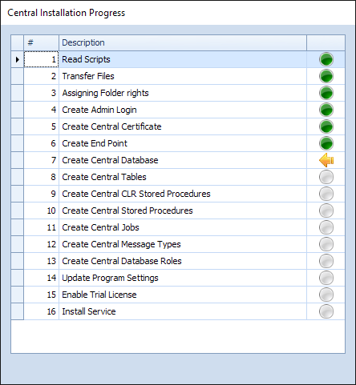
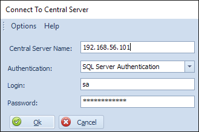

Installing the Conductor4SQL User Interface
You will receive a Conductor4SQL.Installer.3.4.11.2.exe file from EnterpriseWorx.
Note
the 3.4.11.2 is the current version of the application, your file name may differ.
Before you start the installation, check your hardware and software against the Central Server Pre-Requisites
Double click on the Conductor4SQL.Installer.3.4.11.2.exe executable to begin the installation
Read and accept the license agreement and click the Next button through the remainder of the screens

Finally you should have the a shortcut to the "Conductor4SQL" application installed on your desktop/server, right click this shortcut and select the Run as administrator option.

Installing Central Server
Click on the Options >> Install New Central Server option

Fill in the Install Central dialog:

- Enter the Server Name of the SQL server
Tip
Ensure that you either use a fully qualified instance name for the server or an ip address.
- Select your preferred Windows or SQL Server authentication method and enter your credentials.
Warning
This user MUST be have sys-admin rights
-
Ip address should get filled in for you.
-
Finally, enter your Windows credentials.
Warning
This user MUST be an Windows administrator for the server you are linking to
-
Now, click the Test Connection button to test the connection to validate the credentials you have entered. If all is well you will get a "Test connection successful" message dialog.
-
Select the Install button to begin the installation.
The Central Server Pre-Checker
- After the Install button is clicked the Pre-Install checker will be initiated.

- A green circle indicates a favorable result.
- An amber circle indicates a warning.
- A blue circle indicates that a step could not be run due to error in a previous step.
- A red circle indicates that the Pre-Checker discovered an issue and will not proceed.
- A grey circle indicates that this step hasn't run yet.
- A orange arrow indicates that this step is currently running.
Pre-Checker Issues
- Step 1: Ensure that we can ping the central server - If this fails run a manual ping. If this also fails contact your network administrator.
- Step 2: Ensure that we can access MS SQL server - If this fails run SQL Server Management Studio and check if you can connect to the server manually.
- Step 3: Ensure that mixed mode authentication is enabled - If this fails switch the server to use Mixed-Mode authentication and restart the server.
- Step 4: Ensure that SQL version is MS SQL 2008 or higher is installed - If this fails you will need to upgrade your server to minimum requirements as per the central requirements document.
- Step 5: Ensure that MS SQL edition is standard or higher - Central cannot be installed on an express instance.
- Step 6: Ensure that the current SQL user is in the sysadmin user group - You require a user with sys-admin rights to install Conductor4SQL
- Step 7: Ensure that service broker is enabled - Service broker must be enabled on the SQL Server, you can run the following script to enable service broker.
USE master;
ALTER DATABASE msdb SET ENABLE_BROKER WITH ROLLBACK IMMEDIATE;
- Step 8: Ensure that Conductor4SQL database does not exist - We run this step to ensure that Conductor4SQL isn't already installed on this server.
- Step 9: Ensure that Conductor4SQL login does not exist - Same as above.
- Step 10: Ensure that Windows user has full admin rights to central server - If this fails check that you are a Windows Administrator on the server you are installing to. Also if you are installing on the local machine make sure that you are running Conductor4SQL as Administrator.
Central Installation Progress
After all steps in the pre-checker are successful the installer will start installing Conductor4SQL onto the central server.

Logging Into Central
After the Central server is installed you can log into central by filling in the dialog box:

- For Central Server Name use the same dns name or ip address that you used to install central
- Fill in the same Authentication method as you used to install central
- If you selected "SQL Server Authentication" please fill in your SQL username and password
- Finally select the Ok button